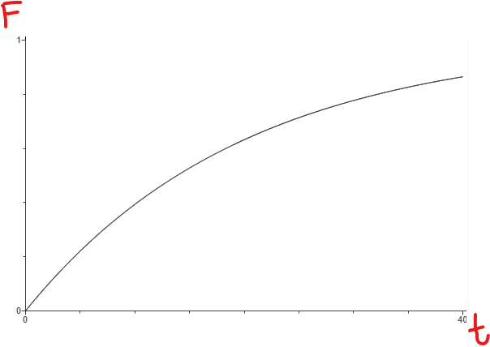
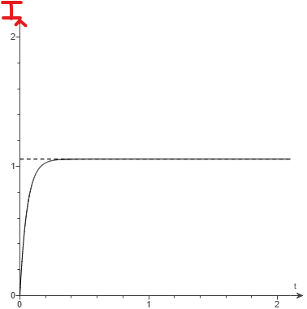
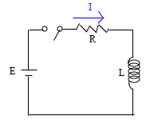
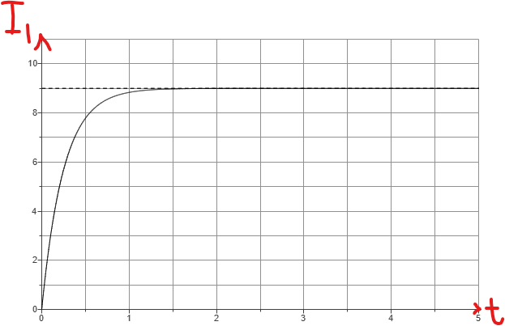
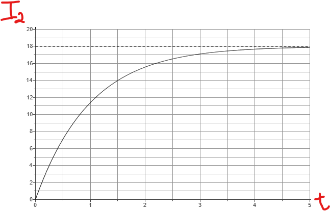

For ACT Students
The ACT is a timed exam...$60$ questions for $60$ minutes
This implies that you have to solve each question in one minute.
Some questions will typically take less than a minute a solve.
Some questions will typically take more than a minute to solve.
The goal is to maximize your time. You use the time saved on those questions you
solved in less than a minute, to solve the questions that will take more than a minute.
So, you should try to solve each question correctly and timely.
So, it is not just solving a question correctly, but solving it correctly on time.
Please ensure you attempt all ACT questions.
There is no negative penalty for a wrong answer.
For JAMB and NZQA Students
Calculators are not allowed. So, the questions are solved in a way that does not require a calculator.
For WASSCE Students
Any question labeled WASCCE is a question for the WASCCE General Mathematics
Any question labeled WASSCE:FM is a question for the WASSCE Further Mathematics/Elective Mathematics
For GCSE Students
All work is shown to satisfy (and actually exceed) the minimum for awarding method marks.
Calculators are allowed for some questions. Calculators are not allowed for some questions.
For NSC Students
For the Questions:
Any space included in a number indicates a comma used to separate digits...separating multiples of three digits from behind.
Any comma included in a number indicates a decimal point.
For the Solutions:
Decimals are used appropriately rather than commas
Commas are used to separate digits appropriately.
| mile | feet |
|---|---|
| $1$ | $5280$ |
| $2.453605702$ | $k$ |

| Large animal | Number |
|
Elephant Rhinoceros Lion Leopard Zebra Giraffe |
600 100 200 300 400 800 |
| Total | 2,400 |


1st:
